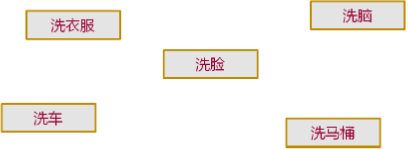

1，重载是 C 语言到 C++ 语言的一个飞跃，C 语言中没有重载的概念，所有的函数 名是不允许有重复的，在 C++ 中因为引进了重载，所以函数名可以重复；
2，自然语言中的上下文：

1，你知道上面词汇中“洗”字的含义吗？
1，不同的动词和名次搭配的含义是不同的；
2，结论：
1，能和“洗”字搭配的词汇有很多；
2，“洗”字和不同的词汇搭配有不同的含义；
3，重载（Overload）的概念：
1，重载是同一个标识符在不同的上下文有不同的意义；
2，如：
1，“洗”和不同的词汇搭配后有不同的含义；
1，洗衣服，洗脸，洗脑，洗马桶，...；
2，“play”和不同的单词搭配后有不同的含义；
1，play chess, play piano, play basketball, ...；
4，思考：
1，重载在自然语言中是随处可见的，那么程序设计中是否也有重载呢？
1，让程序设计语言接近自然语言，所以计算机科学家在设计语言的时候就考虑将人类的语言习惯引进到程序设计语言中，C++ 就引入了重载的概念；
2，程序设计语言中和动词接近的是函数，所以 C++ 中选择函数来实现重载的概念；
5，C++ 中的函数重载：
1，函数重载（Function Overload）：
1，用同一个函数名定义不同的函数；
1，这是 C++ 中重载的概念；
2，C++ 后续语言也是这样实现重载；
2，当函数名和不同的参数搭配时函数的含义不同；
1，当函数名和不同的参数搭配时实现了函数重载；
1，函数名类似动词，参数类似名词；
2，含义的不同在于所执行的函数体不同；
3，代码示例：
1 int func(int x)
2 {
3 return x;
4 }
5
6 int func(int a, int b)
7 {
8 return a + b;
9 }
10
11 int func(const char* s)
12 {
13 return strlen(s);
14 }2，函数重载初探编程实验：
1，main.cpp 文件：
1 #include <stdio.h>
2 #include <string.h>
3
4 int func(int x)
5 {
6 return x;
7 }
8
9 int func(int a, int b)
10 {
11 return a + b;
12 }
13
14 int func(const char* s)
15 {
16 return strlen(s);
17 }
18
19 int main(int argc, char *argv[])
20 {
21 printf("%d\n", func(3));
22 printf("%d\n", func(4, 5));
23 printf("%d\n", func("D.T.Software"));
24
25 return 0;
26 }2，输出结果：
3
9
12.
3，C++ 支持函数重载，它是根据自然语言中的重载概念得来的；
6，函数重载至少满足下面一个条件（数类序）：
1，参数个数不同；
2，参数类型不同；
3，参数顺序不同；
7，当函数默认参数遇上函数重载会发生什么？
1，代码示例：
1 int func(int a, int b, int c = 0)
2 {
3 return a * b * c;
4 }
5
6 int func(int a, int b) // 个数不同，构成重载；
7 {
8 return a + b;
9 }
10
11 int main()
12 {
13 int c = func(1, 2); // which one?
14
15 return 0;
16 }
8，函数默认参数 VS 函数重载编程实验：
1，main.cpp 文件：
1 #include <stdio.h>
2
3 int func(int a, int b, int c = 0)
4 {
5 return a * b * c;
6 }
7
8 int func(int a, int b)
9 {
10 return a + b;
11 }
12
13 int main(int argc, char *argv[])
14 {
15 int c = func(1, 2); // error: call of overloaded 'func(int, int)' is ambiguous
16
17 return 0;
18 }2，这里是 C++ 中第一个特性冲突，后续 Java、C# 语言上述的默认参数值是不允许的，因为程序设计时，不允许二义性；
9，编译器调用重载函数的准则：
1，将所有同名函数作为候选者；
2，尝试寻找可行的候选函数；
1，精确匹配实参；
2，通过默认参数能够匹配实参；
3，通过默认类型转换匹配实参；
3，匹配失败：
1，最终寻找到的候选函数不唯一，则出现二义性，编译失败；
2，无法匹配所有候选者，函数未定义，编译失败；
10，函数重载的注意事项：
1，重载函数在本质上是相互独立的不同函数；
2，重载函数的函数类型不同；
3，函数返回值不能作为重载的依据；
1，函数重载是由函数名和参数列表决定的；
11，函数重载的本质编程实验：
1，main.cpp 文件：
1 #include <stdio.h>
2
3 int add(int a, int b) // 函数类型为 int(int, int)；
4 {
5 return a + b;
6 }
7
8 int add(int a, int b, int c) // 函数类型为 int(int, int, int)；
9 {
10 return a + b + c;
11 }
12
13 int main()
14 {
15 printf("%p\n", (int(*)(int, int))add);//函数名 add 是函数入口地址，当只用add来得到地址时，由于重载的原因，编译器在此处显示 error: overloaded function with no contextual information，而当不是重载的函数时，可以直接使用 add 来获取函数地址；这里通过强制类型转换将 add 转换为 (int(*)(int, int)) 这样的函数指针；
16 printf("%p\n", (int(*)(int, int, int))add);
17
18 return 0;
19 }2，输出结果：
00DF100A
00DF100F
3，结论 1：
1，函数的入口地址不同，可以反向的证明这是两个不同的函数；
4，通过 VS 命令行运行命令“dumpbin /symbols ProgramName.obj路径”查看 VS 中的工程符号表中的如下两行：
00E 00000000 SECT3 notype () External | ?add@@YAHHH@Z (int __cdecl add(int,int))
1，C++ 编译器编译 int __cdecl add(int,int) 函数后，在符号表中认为标识符为 ?add@@YAHHH@Z；
01F 00000000 SECT7 notype () External | ?add@@YAHHHH@Z (int __cdecl add(int,int,int))
1，C++ 编译器编译 int __cdecl add(int,int,int) 函数后，在符号表中认为标识符为 ?add@@YAHHHH@Z；
5，结论 2：
1，编译器在编译这两个函数的时候，已经分开对待了，编译器获得的这两个函数的名字是不同的；
2，编译器认为这是两个不同的函数，所以编译出的最终结果也就是可执行程序中这两个函数的入口地址是不同的；
6，总的结论：
1，不管正向推还是反向推，C++ 语言中重载函数的本质其实是不同的函数；
12，小结：
1，函数重载是 C++ 中引入的概念；
2，函数重载用于模拟自然语言中的词汇搭配；
3，函数重载使得 C++ 具有更丰富的语义表达能力；
1，让 C++ 编程更符合人类思维习惯；
4，函数重载的本质为相互独立的不同函数；
5，C++ 中通过函数名和函数参数确定函数调用；
1，返回值不参与重载过程；